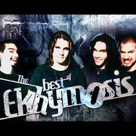

A los 15 años comenzó su trayectoria musical en una banda de metal, llamada ekhymosis, con la que publicó seis álbumes logrando reconocimiento en la escena musical de su país natal. Decide lanzarse como solista en el año 2000, con el álbum fijate bien, logrando buenos conceptos de la crítica especializada.
nació en Medellín en 1987; relata juanes: "Mi guitarra necesitaba reparación y me encontré con Andy quien sabía repararla, desde ese día no hemos parado, comenzamos a tocar entre nosotros, pero nos dimos cuenta que nos estaba gustando toda esta idea de tocar. Teníamos que buscarle un nombre al grupo, algo que definiera nuestra música y entre los que teníamos nos gustó como sonaba Ekhymosis.